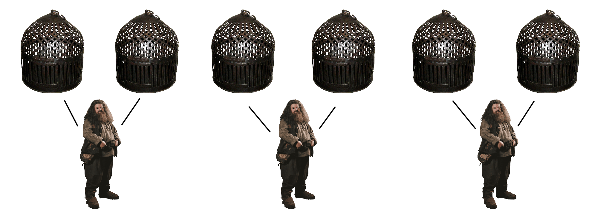
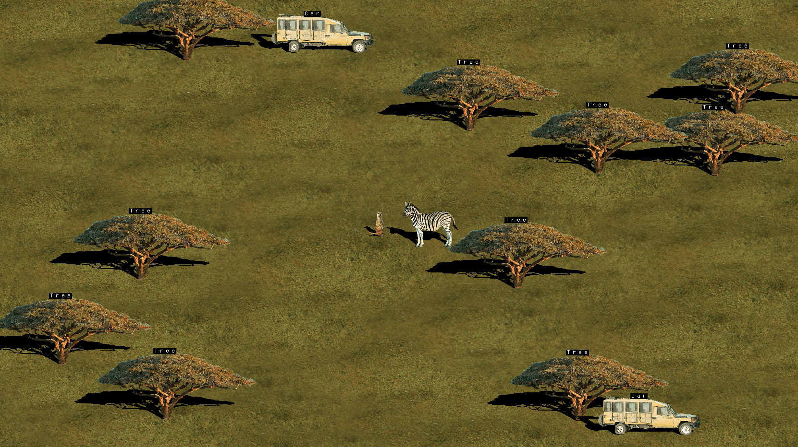
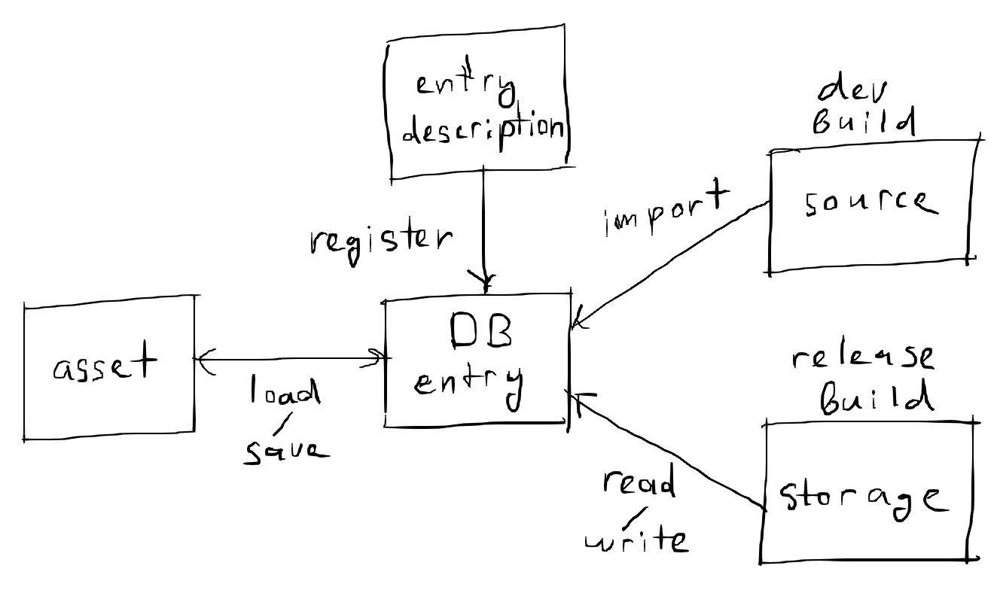

Overview
Willow is a game engine, made for my games Bogwalker and The Blue Break (and other games I might make in the future). It is very unstable and has many missing features.
At the start you give a fixed memory cap number to base.init and this is the maximum amount of memory that your threads will be able to allocate.
You also give it a fixed readonly memory cap which is used to allocate a range of read-only memory, which will be accessible by all threads without the need for synchronization. The readonly memory must be initialized before you call base.start, and then base.start will hash it and in debug mode this hash will be used to verify the integrity of this read-only memory.
base.start will determine the optimal number of threads and create that many threads and call entry_point on all those threads including the main thread. Do not touch context.user_ptr, that’s where thread_data is stored, and it’s needed.
main :: proc() {
MEMORY_CAP :: 100000
READONLY_MEMORY_CAP :: 1000
base.init(MEMORY_CAP, READONLY_MEMORY_CAP)
// ...
base.start(entry_point) }
entry_point :: proc(thread_data: ^base.Thread_Data) {
// ...
return }
The basic premise of the multi-threading architecture is that the memory is split into cages, where each cage is an interval with a lock. Each thread has a keeper and a keeper can own no more than 2 cages at a time. To acquire a cage call base.acquire_cage and give it some point from the interval of that cage. If you attempt to acquire more than 2 cages, it will return false and an error will be printed. You can release a cage by base.acquire_cage with a pointer from the interval of that cage. The helper function keeper_swap_by_lock can be used to release one cage and acquire another in one sweeping motion.

The Lock System

Every thread is able to own at most 2 locks at a time. This is the bare minimum number of locks necessary for any algorithm. The containers for these two locks are called the lock registers. In addition, every thread has a lock stack. This allows for lock pairs to be managed in larger, nested scopes, as opposed to small disjoint scopes. If a procedure that has acquired lock A and B wants to call a procedure that depends on locks B and C, normally it would call a sync function to acquire lock C at the start and then call a sync function to release it at the end, but in my system, it can call a sync function at the start to acquire lock C and hint that lock A is no longer needed, and then call a sync function to release it at the end. And what happens in the background is, A is released and push into the lock stack, then B and C are acquired in order, and at the end C is released and A is popped from the stack and A and B are acquired in order. The stack is necessary so that the callee can remember what locks were owned by the caller and restore them.
Multi-Threading
For Willow’s thread synchronization to work without errors, your package needs to follow a set of rules. To check if it does, you can run the willow checker on your package, like this:
willow check <package_dir>
Informally, the rules are:
- Every sync-safe function must declare which locks it’s going to own immediately at its beginning, by calling one of Willow’s lock methods. A sync-safe function is a function with the
@(tag="sync_safe")tag. - Willow’s lock methods should not be used anywhere else except at the immediate beginning of a sync-safe function.
- A sync-safe function must return immediately if the lock method in it returned false.
- A sync-safe function must not access any global variables.
- A sync-safe function must not have any arguments of pointer type or arguments of types that contain pointers.
Allocators and Mutexes
- No global state allowed
- Every mutex is associated with a memory interval
- Function is not allowed to take as inputs pointers from memory intervals outside of the intervals of the two mutexes they’ve acquired
Start
Examples
Sync

The sync example demonstrates the willow/multi module. It is a multi-threaded agent-based simulation, where numerous entities are simulated in parallel, exhibiting complex behavior and exchanging state at arbitrary moments of interaction.
CLI
~/Willow/willow.exe is a command-line utility which provides some commands that should make it easier to install and use Willow. It is entirely optional.
Install
The install command copies the Willow library from Willow’s installation directory to the shared/ folder in the Odin installation directory on your machine. You need to do this once, before using Willow in your Odin package. Alternatively, you can manually copy ~/Willow/shared/willow to ~/Odin/shared/willow.
willow install
Init
The init command initializes a starter project directory using the Willow engine. It creates a new directory, copies to it the contents of ~/Willow/starter, and initializes a Git repo in it.
willow init <directory-name>
Invoking willow init game will create the following directory structure:
game/
├─ data/
│ ├─ ...
├─ .git
├─ main.odin
├─ README.md
Check
The check command runs the Willow preprocessor on a given Odin package, to check whether or not Willow’s thread synchronization rules are followed.
willow check <directory-name> [-r]
If the -r option is enabled, Willow will also preprocess all imported packages recursively, excluding the ones from the Odin standard library.
API
Base
This is the base layer, responsible mainly for initialization, synchronization, and configuration.
Constants
WILLOW_VERSION
WILLOW_VERSION: [3]u16 : { 0, 0, 1 }
Types
Tick_Manager
Tick_Manager :: struct {
using tick_manager_config: Tick_Manager_Config,
stopwatch: time.Stopwatch,
tick_period_nsec: i64,
tick_period_sec: f32,
accumulation_to_now: i64,
accumulation_to_last_tick: i64,
delta_time: f32,
frame_rate: f32,
flag: bool }
Description
Tick manager. Used for tracking frame-rate, calculating delta time, and limiting frame-rate. You can use this if you want something to happen at roughly equal time intervals, and to keep track of those intervals.Tick_Manager_Config
Tick_Manager_Config :: struct {
tickrate_setting: Tickrate_Setting }
Tickrate_Setting
Tickrate_Setting :: enum {
LIMITED_30_FPS = 0,
LIMITED_60_FPS,
LIMITED_120_FPS,
LIMITED_144_FPS,
LIMITED_240_FPS,
LIMITED_540_FPS,
UNLIMITED }
Settings_Manager
Settings_Manager :: struct {
settings_path: string,
_map: map[string]map[string]string }
Description
A helper class for game settings. Can compile an INI file from an arbitrary number of structs, and vice-versa.Thread_Data
Thread_Data :: struct {
index: u32,
... }
Lock
Lock :: ...
The default mutex type.
Procedures
init_tick_manager
init_tick_manager :: proc(
tick_man: ^Tick_Manager,
config: Tick_Manager_Config)
tick_manager_tick
tick_manager_tick :: proc(
tick_man: ^Tick_Manager) -> bool
Description
Returns true if enough time has passed since the previous frame that a new frame should be processed. Must calltick_manager_reset after the frame has been processed.
tick_manager_reset
tick_manager_reset :: proc(
tick_man: ^Tick_Manager)
zero_stopwatch
zero_stopwatch :: proc(
timer: ^time.Stopwatch)
Description
Stopwatch helper function. Zeroes and starts the stopwatch.read_stopwatch
read_stopwatch :: proc(
timer: ^time.Stopwatch) -> f32
Description
Stopwatch helper function. Reads the stopwatch, in seconds.init_settings_manager
init_settings_manager :: proc(
settings: ^Settings_Manager,
application_name: string)
Description
Initialize aSettings_Manager. application_name is the name of a folder in ~/AppData/Local where the setting will be saved.
settings_manager_write
settings_manager_write :: proc(
settings: ^Settings_Manager,
value: ^$Type) where intrinsics.type_is_struct(Type)
Description
Write the contents of an arbitrary struct to the settings. The settings will be added under a new section named after typeType.
settings_manager_read
settings_manager_read :: proc(
settings: ^Settings_Manager,
value: ^$Type) where intrinsics.type_is_struct(Type)
settings_manager_export
settings_manager_export :: proc(
settings: ^Settings_Manager)
settings_manager_import
settings_manager_import :: proc(
settings: ^Settings_Manager)
start
start :: proc(
entry_point: Entry_Point,
n_workers_override: Maybe(u32) = nil)
Description
Create and start a number of threads with the same entry procedure. The number of threads will be equal to the number of logical cores minus 3, however you can override this by settingn_workers_override.
make_thread_data
make_thread_data :: proc(
entry_point: Entry_Point,
index: u32) -> (thread_data: ^Thread_Data)
get_thread_data
get_thread_data :: proc() -> (thread_data: ^Thread_Data)
Asset Manager
Overview

Database is an abstraction layer between the in-memory and on-disk representations of assets. It’s purpose is to make it so you don’t have to think about where the assets are coming from and to automate updating and reloading them.
Assets are identified by a string URL. The URL has the form <kind>:<name>. The intended way of managing assets is by registering their kinds at initialization time, then loading them and then saving them at deinitialization time; The database will automatically do the importing, reading, and writing for you. However, if you want, you can also import, read, or write manually.
By setting the watch field on Asset_Manager_Config, you can enable the asset manager to watch for changes and automatically read, import, or load assets. This can allow you to edit assets while the game is running and see changes in real time.
Asset representations
An asset can have up to five representations. None of these is mandatory.
Source_Directory— The source file from which the asset is imported.Database_File— The binary file where the database stores its contents.Database— The in-memory contents of the database.Main_Memory— The primary in-memory representation of the asset.GPU_Memory— The GPU representation of the asset.
Asset commands
Validate— Check if the asset is initialized with valid contents.Query_Location— Checks which locations Updates thelocationfield with the current locationns of the asset.Import— Produces a database representation from a source representation.Export— Produces a source representation from a database representation.Load— Produces a default representation from a database representation.Save— Produces a database representation from a default representation.Upload— Produces a GPU representation from a default representation.Download— Produces a representation from a GPU representation.
Making custom asset types
To make a custom asset type, you need to do these four things:
- Define a struct type that derives from
Asset.
My_Asset :: struct {
using asset: Asset,
... }
- Call
init_assseton theAssetfield, whenever your custom asset type is initialized.
init_my_asset :: proc(
as_mngr: ^Asset_Manager,
my_asset: ^My_Asset,
config: Asset_Config) {
init_asset(as_mngr, &string_asset.asset, config)
... }
- Define an
Asset_Command_Procprocedure for your custom asset type.
my_asset_command :: proc(
as_mngr: ^Asset_Manager,
asset: ^Asset,
command: Asset_Command,
watch: bool = false) -> (ok: bool) {
my_asset := asset_object(asset, My_Asset, "asset")
switch command {
case .Validate: ...
case .Query_Location: ...
case .Import: ...
case .Export: ...
case .Load: ...
case .Save: ...
case .Upload: ...
case .Download: ...
return false }
- Register your custom asset type.
register_asset_kind(as_mngr, My_Asset, { command = my_asset_command })
Constants
DEFAULT_AUTOSAVE_INTERVAL
DEFAULT_AUTOSAVE_INTERVAL :: 30 * tm.Minute
DEFAULT_AUTOSAVE_CAP
DEFAULT_AUTOSAVE_CAP :: 10
Types
Asset_Manager_Config
Asset_Manager_Config :: Database_Config
Asset_Manager
Asset_Manager :: struct {
using database: Database,
assets: [dynamic]^Asset,
asset_kinds: map[typeid]Asset_Kind }
Description
Asset manager.Asset_Command
Asset_Command :: enum {
Validate,
Query_Location,
Import,
Export,
Load,
Save,
Upload,
Download }
Asset_Location
Asset_Location :: bit_set[Asset_Location_Field]
Asset_Location_Field
Asset_Location_Field :: enum {
Source_Directory,
Database_File,
Database,
Main_Memory,
GPU_Memory }
Asset_Command_Proc
Asset_Command_Proc :: #type proc(
manager: ^Asset_Manager,
asset: ^Asset,
command: Asset_Command,
watch: bool = false) -> (ok: bool)
Asset_Config
Asset_Config :: struct {
url: URL,
derived_type: typeid }
Asset
Asset :: struct {
using asset_config: Asset_Config,
location: Asset_Location }
Asset_Kind
Asset_Kind :: struct {
command: Asset_Command_Proc }
String_Asset
String_Asset :: struct {
using asset: Asset,
str: string }
URL
URL :: distinct string
Database_Config
Database_Config :: struct {
relpath: string,
source_directory_relpath: string,
autosave_interval: tm.Duration,
autosave_cap: u32 }
Database
Database :: struct {
using config: Database_Config,
spec_modification_time: tm.Time,
last_autosave_time: tm.Time,
modification_time: tm.Time,
entries: [dynamic]Entry,
entries_map: map[URL]^Entry,
spec_modified: bool }
Entry_Config
Entry_Config :: struct {
url: URL,
modification_time: tm.Time,
compressed: b8,
data: []u8 }
Entry
Entry :: struct {
using config: Entry_Config,
hash: u32 }
Watcher
Watcher :: struct {
data: rawptr,
outdated_proc: Outdated_Proc,
update_proc: Update_Proc }
Outdated_Proc
Outdated_Proc :: #type proc(data: rawptr) -> bool
Update_Proc
Update_Proc :: #type proc(data: rawptr)
Procedures
asset_command
asset_command :: proc(
manager: ^Asset_Manager,
Asset_Type: typeid,
asset: ^Asset,
command: Asset_Command,
watch: bool = false) -> (ok: bool)
Description
Execute an asset command.Asset_Type must be a type that derives from Asset, and asset must be a pointer to a field in an object of that type. If watch is true, the command will be exucted only if the source is more recent than the target.
asset_commands
asset_commands :: proc(
manager: ^Asset_Manager,
Asset_Type: typeid,
asset: ^Asset,
commands: []Asset_Command,
watch: bool = false) -> (ok: bool)
init_asset
@(deferred_in=_init_asset_end)
init_asset :: proc(
manager: ^Asset_Manager,
Asset_Type: typeid,
asset: ^Asset,
config: Asset_Config)
Description
Initialize the assetasset with the config config and add it to the internal collection of assets in as_mngr. _init_asset_end executes the .Validate and .Query_Location asset commands.
asset_object
asset_object :: proc(
asset: ^Asset,
$T: typeid,
$field_name: string) -> (^T)
Description
Ifasset is a pointer to a field named field_name in a struct of type T, produce a pointer to the object whose field this is.
make_asset_manager
make_asset_manager :: proc(
config: Asset_Manager_Config,
allocator: runtime.Allocator) -> (asset_manager: Asset_Manager)
Description
TheAsset_Manager constructor.
register_asset_kind
register_asset_kind :: proc(
manager: ^Asset_Manager,
$Type: typeid,
kind: Asset_Kind)
Description
Register a new asset kind. An asset kind must be registered for any asset type before asset commands can be executed on instances of that type.watch_assets
watch_assets :: proc(
manager: ^Asset_Manager)
Description
Check all registered assets for updates. If the source is more recent than the database entry, the asset will be imported; If the database entry is more recent than the asset object, the asset will be loaded. Internally, it works by executing the.Import command and then the .Load command, with watch=true.
autosave
autosave :: proc(
database: ^Asset_Manager)
init_string_asset
init_string_asset :: proc(
as_mngr: ^Asset_Manager,
string_asset: ^String_Asset,
config: Asset_Config)
string_asset_command
string_asset_command :: proc(
as_mngr: ^Asset_Manager,
asset: ^Asset,
command: Asset_Command,
watch: bool = false) -> (ok: bool)
register_builtin_asset_kinds
register_builtin_asset_kinds :: proc(
as_mngr: ^Asset_Manager)
make_database
Database constructor.
make_database :: proc(
config: Database_Config,
allocator: rt.Allocator) -> (database: Database)
delete_database
Database destructor.
delete_database :: proc(
database: Database,
allocator: runtime.Allocator)
make_entry
Entry constructor.
make_entry :: proc(
url: URL,
data: []u8,
modification_time: time.Time = { },
compressed: b8 = false) -> (entry: Entry)
delete_entry
Entry destructor.
delete_entry :: proc(
entry: Entry,
allocator: runtime.Allocator)
entry_equiv
Check if two entries are equivalent (equivalent URL, equivalent data, equivalent compressedness state).
entry_equiv :: proc(
entry_a: ^Entry,
entry_b: ^Entry)
entry_from_url
Retreive entry from database by URL.
entry_from_url :: proc(
database: ^Database,
url: URL) -> (entry: ^Entry, ok: bool)
get_entry
get_entry :: proc(
database: ^Database,
url: URL) -> (entry: ^Entry, ok: bool)
get_or_make_entry
get_or_make_entry :: proc(
database: ^Database,
url: URL) -> (entry: ^Entry, existed: bool)
contains_entry
Check if database contains entry with given URL.
contains_entry :: proc(
database: ^Database,
url: URL) -> bool
log_database
log_database :: proc(
database: ^Database)
entry_integrity
entry_integrity :: proc(
entry: ^Entry) -> (ok: bool)
add_entry
Add entry to database.
add_entry :: proc(
database: ^Database,
entry_config: Entry_Config,
modified: bool) -> (entry_ptr: ^Entry, err: os.Error)
add_or_update_entry
Add entry to database; If exists, update it.
add_or_update_entry :: proc(
database: ^Database,
entry_config: Entry_Config,
modified: bool) -> (entry_ptr: ^Entry, err: os.Error)
remove_entry
Remove entry from database.
remove_entry :: proc(
database: ^Database,
entry: ^Entry)
clone_entry
Clone an entry.
clone_entry :: proc(
entry: ^Entry,
allocator: rt.Allocator) -> (entry_clone: Entry)
clone
Clone a database.
clone :: proc(
database: ^Database,
allocator: rt.Allocator) -> (database_clone: Database)
equiv
Check if two databases are equivalent (have equivalent entries).
equiv :: proc(
database_a,
database_b: ^Database) -> bool
relpath_to_path
Convert a relative path string (relative to the directory of the executable) to an absolute path string.
relpath_to_path :: proc(
relpath: string,
allocator: rt.Allocator) -> (path: string)
relpath_to_source_path
Convert a relative path string (relative to the source directory of the database) to an absolute path string.
relpath_to_source_path :: proc(
database: ^Database,
relpath: string,
allocator: rt.Allocator) -> (path: string)
path_to_relpath
Convert an absolute path string to a relative path string (relative to the directory of the executable).
path_to_relpath :: proc(
path: string,
allocator: rt.Allocator) -> (relpath: string)
make_or_read_database
Check if a database exists at the given relative path. If it exists, read it; If it does not exist, construct a new one.
make_or_read_database :: proc(
config: Database_Config,
allocator: rt.Allocator) -> (database: Database)
read
Read the database at the given relative path.
read :: proc(
config: Database_Config,
allocator: runtime.Allocator,
relpath_override: string = "") -> (database: Database)
write
write :: proc(
database: ^Database,
allocator: runtime.Allocator,
relpath_override: string = "")
remove_database
Remove the database file from disk.
remove_database :: proc(
database: ^Database) -> (err: os.Error)
url_join
url_join :: proc(
urls: []URL,
allocator: rt.Allocator) -> URL
url_split
url_split :: proc(
url: URL,
allocator: rt.Allocator) -> (res: []string)
relpath_from_url
Get the relative path (relative to the source directory of the database) of the source of the entry with the given URL.
relpath_from_url :: proc(
database: ^Database,
url: URL,
allocator: rt.Allocator) -> (path: string)
path_from_url
Get the absolute path of the source of the entry with the given URL.
path_from_url :: proc(
database: ^Database,
url: URL,
allocator: rt.Allocator) -> (path: string)
entry_was_modified
Check if the source of the given entry has been updated since the entry was imported to the database.
entry_was_modified :: proc(
database: ^Database,
entry: ^Entry) -> (outdated: bool)
update_entry
Update the contents of an entry.
update_entry :: proc(
database: ^Database,
entry: ^Entry,
config: Entry_Config,
modified: bool)
url_search_source
url_search_source :: proc(
database: ^Database,
url: URL,
allocator: rt.Allocator) -> (path: string, err: os.Error)
Description
Get the path of the first file in the database's source directory that has the a name matching the given URL.file_was_modified
file_was_modified :: proc(
relpath: string,
modification_time: ^tm.Time) -> (was_modified: bool)
Description
Watch a given file for modifications. The modification_time parameter is where the latest modification time is stored. Whenever the file is modified, this function will return `true`. This will happen only once per modification. Example:modification_time: tm.Time
for {
game_tick()
if file_was_modified(relpath, &modification_time) do do_something() }
remove_file
remove_file :: proc(
relpath: string,
allocator: runtime.Allocator) -> (err: os.Error)
rename_file
rename_file :: proc(
old_relpath: string,
new_relpath: string,
allocator: runtime.Allocator) -> (err: os.Error)
watcher_tick
watcher_tick :: proc(watcher: ^Watcher)
Container
Various containers used throughout Willow.
Types
Bary
Bary :: [3]f32
Two_Stack
Two_Stack :: struct($T: typeid) {
buffer: [2]T,
len: u8 }
Procedures
bary_from_point
bary_from_point :: proc { bary_from_point2 }
bary_from_point2 :: proc(point: [2]f32, triangle: [3][2]f32) -> (bary: Bary)
Description
Convert Euclidean coordinates to barycentric coordinates relative to a given triangle.bary_to_point
bary_to_point :: proc { bary_to_point2, bary_to_point3 }
bary_to_point2 :: proc(bary: Bary, triangle: [3][2]f32) -> (point: [2]f32)
bary_to_point3 :: proc(bary: Bary, triangle: [3][3]f32) -> (point: [3]f32)
Description
Convert barycentric coordinates relative to a given triangle to Euclidean coordinates.bary_inside
bary_inside :: proc(bary: Bary) -> bool
Description
Check if the given barycentrric point is inside the triangle relative to which it is defined.point_inside_triangle
point_inside_triangle :: proc { point2_inside_triangle }
point2_inside_triangle :: proc(point: [2]f32, triangle: [3][2]f32) -> bool
Description
Check if the given Euclidean point is inside the given triangle.init
init :: proc(two_stack: ^Two_Stack($T))
len
len :: proc(two_stack: ^Two_Stack($T)) -> int
push
push :: push_top
push_top
push_top :: proc(two_stack: ^Two_Stack($T), elem: T) -> bool
push_bottom
push_bottom :: proc(two_stack: ^Two_Stack($T), elem: T) -> bool
pop
pop :: pop_top
pop_top
pop_top :: proc(two_stack: ^Two_Stack($T)) -> (elem: T, ok: bool)
pop_bottom
pop_bottom :: proc(two_stack: ^Two_Stack($T)) -> (elem: T, ok: bool)
peek
peek :: peek_top
peek_top
peek_top :: proc(two_stack: ^Two_Stack($T)) -> (elem: T, ok: bool)
peek_bottom
peek_bottom :: proc(two_stack: ^Two_Stack($T)) -> (elem: T, ok: bool)
contains
contains :: proc(two_stack: ^Two_Stack($T), elem: T) -> (ok: bool)
Bary
Various containers used throughout Willow.
Types
Bary
Bary :: [3]f32
Procedures
bary_from_point
bary_from_point :: proc { bary_from_point2 }
bary_from_point2 :: proc(point: [2]f32, triangle: [3][2]f32) -> (bary: Bary)
Description
Convert Euclidean coordinates to barycentric coordinates relative to a given triangle.bary_to_point
bary_to_point :: proc { bary_to_point2, bary_to_point3 }
bary_to_point2 :: proc(bary: Bary, triangle: [3][2]f32) -> (point: [2]f32)
bary_to_point3 :: proc(bary: Bary, triangle: [3][3]f32) -> (point: [3]f32)
Description
Convert barycentric coordinates relative to a given triangle to Euclidean coordinates.bary_inside
bary_inside :: proc(bary: Bary) -> bool
Description
Check if the given barycentrric point is inside the triangle relative to which it is defined.point_inside_triangle
point_inside_triangle :: proc { point2_inside_triangle }
point2_inside_triangle :: proc(point: [2]f32, triangle: [3][2]f32) -> bool
Description
Check if the given Euclidean point is inside the given triangle.Rect
Types
Rect
Rect :: struct #packed {
pos: [2]f32,
size: [2]f32 }
Procedures
make_rect
make_rect :: proc(pos_x, pos_y, size_x, size_y: f32) -> Rect
left
left :: proc(rect: Rect) -> f32
Description
Get the x-coordinate of the left wall of the given rectangle.right
right :: proc(rect: Rect) -> f32
Description
Get the x-coordinate of the right wall of the given rectangle.bottom
bottom :: proc(rect: Rect) -> f32
Description
Get the y-coordinate of the bottom wall of the given rectangle.top
top :: proc(rect: Rect) -> f32
Description
Get the y-coordinate of the top wall of the given rectangle.contains_point
contains_point :: proc(rect: Rect, point: [2]f32) -> bool
Description
Check if a given point is either in or on the given rectangle.SDF
Constants
SDF_CLEAR
SDF_CLEAR :: 1000000
COLLISION_EPSILON
COLLISION_EPSILON :: 0.05
Types
Distance
Distance :: f32
SDF_ID
SDF_ID :: enum {
PLANE = 0,
SPHERE = 1,
CAPSULE_Z = 2,
GROUND_TRIANGLE = 3,
GROUND = 4,
MESH = 5 }
SDF_Surface
SDF_Surface :: union {
SDF_Plane,
SDF_Sphere,
SDF_Capsule_Z,
SDF_Triangle,
SDF_Triangle_Mesh,
SDF_Plane_Mesh }
SDF_Plane
SDF_Plane :: struct {
c: [3]f32,
n: [3]f32,
h: f32 }
Description
A plane defined by a center pointc, a normal vector n, and an offset h along the normal.
SDF_Sphere
SDF_Sphere :: struct {
c: [3]f32,
r: f32 }
Description
A sphere defined by a center pointc, and a radius r.
SDF_Capsule_Z
SDF_Capsule_Z :: struct {
c: [3]f32,
r: f32,
l: f32 }
Description
A capsule oriented along the Z axis, defined by a center pointc, a radius r, and a length l.
SDF_Triangle
SDF_Triangle :: struct {
a: [3]f32,
b: [3]f32,
c: [3]f32 }
Description
A triangle defined by three points.SDF_Triangle_Mesh
SDF_Triangle_Mesh :: struct {
triangles: []SDF_Triangle }
Description
A hollow triangular mesh, defined as the union of a set of triangles.SDF_Plane_Mesh
SDF_Plane_Mesh :: struct {
planes: []SDF_Plane }
Description
A solid convex mesh, defined as the intersection of a set of planes.Collider
Collider :: struct {
surface: SDF_Surface,
bounds: SDF_Sphere }
Description
A surface with a bounding sphere.Procedures
sdf_plane
sdf_plane :: proc(
p: [3]f32,
plane: SDF_Plane) -> Distance
Description
Compute the signed distance from a point to anSDF_Plane.
sdf_sphere
sdf_sphere :: proc(
p: [3]f32,
sphere: SDF_Sphere) -> Distance
Description
Compute the signed distance from a point to anSDF_Sphere.
sdf_capsule_z
sdf_capsule_z :: proc(
p: [3]f32,
capsule: SDF_Capsule_Z) -> Distance
Description
Compute the signed distance from a point to anSDF_Capsule_Z.
sdf_triangle
sdf_triangle :: proc(
p: [3]f32,
triangle: SDF_Triangle) -> Distance
Description
Compute the signed distance from a point to anSDF_Triangle.
sdf_triangle_mesh
sdf_triangle_mesh :: proc(
p: [3]f32,
mesh: SDF_Triangle_Mesh) -> Distance
Description
Compute the signed distance from a point to anSDF_Triangle_Mesh.
sdf_plane_mesh
sdf_plane_mesh :: proc(
p: [3]f32,
mesh: SDF_Plane_Mesh) -> Distance
Description
Compute the signed distance from a point to anSDF_Plane_Mesh.
sdf_surface
sdf_surface :: proc(
p: [3]f32,
surface: SDF_Surface) -> Distance
Description
Compute the signed distance from a point to anSDF_Surface.
sdf_collision_surfaces
sdf_collision_surfaces :: proc(
p: [3]f32,
collision_surfaces: ^[dynamic]SDF_Surface) -> Distance
Description
Compute the signed distance from a point to the union of a set ofSDF_Surfaces.
nf_collision_surfaces
nf_collision_surfaces :: proc(
p: [3]f32,
collision_surfaces: ^[dynamic]SDF_Surface) -> [3]f32
Description
Compute the normal of the union of a set ofSDF_Surfaces at the nearest point to point p.
sdf_inside
sdf_inside :: proc(
d: Distance) -> bool
Description
Is point inside surface?sdf_outside
sdf_outside :: proc(
d: Distance) -> bool
Description
Is point outside surface?sdf_sect
sdf_sect :: proc(
d_a, d_b: Distance) -> Distance
Description
Intersection.sdf_smooth_sect
sdf_smooth_sect :: proc(
d_a, d_b: Distance, k: f32) -> Distance
Description
Smooth intersection.sdf_union
sdf_union :: proc(
d_a, d_b: Distance) -> Distance
Description
Union.sdf_smooth_union
sdf_smooth_union :: proc(
d_a, d_b: Distance,
k: f32) -> Distance
Description
Smooth union.sdf_diff
sdf_diff :: proc(
d_a, d_b: Distance) -> Distance
Description
Difference.sdf_smooth_diff
sdf_smooth_diff :: proc(
d_a, d_b: Distance,
k: f32) -> Distance
Description
Smooth difference.sdf_round
sdf_round :: proc(
d: Distance,
r: f32) -> Distance
Description
Rounding.Graphics
graphics.tick is called at the beginning of the frame!
Types
Image
Image :: struct {
url: db.URL,
using image: im.Image }
Procedures
image_equiv
image_equiv :: proc(
a: ^Image,
b: ^Image) -> bool
import_or_retreive_image
import_or_retreive_image :: proc(
database: ^db.Database,
url: db.URL,
allocator: rt.Allocator) -> (image: Image, err: os.Error)
Description
Get an image from the database by URL. If no such image exists, load it from file and add to the database.image_serialize
image_serialize :: proc(
image: ^Image,
allocator: rt.Allocator) -> (bytes: []u8, err: os.Error)
Description
Serialize an `Image` object.image_deserialize
image_deserialize :: proc(
bytes: []u8,
allocator: rt.Allocator) -> (image: Image, err: os.Error)
Description
Deserialize an `Image` object.load_from_path
load_from_path :: proc(
path: string,
url: db.URL,
allocator: rt.Allocator) -> (image: Image, err: os.Error)
upload_image
upload_image :: proc(
image: ^Image) -> bool
Description
Upload image to GPU memory.download_image
download_image :: proc(
image: ^Image)
Description
Release the GPU memory associated with the image.image_loaded
image_loaded :: proc(
image: ^Image) -> bool
Description
Check if the image has been uploaded to the GPU.GUI
Procedures
rect_margins
rect_margins :: proc(
rect_in: rect.Rect,
margins: f32) -> (rect_out: rect.Rect)
Description
Add margins to rectangle on all sides.Input
package input_sys
Overview
The willow/input_sys module is for storing and processing inputs. There are two kinds of inputs: scalar inputs (ie, mouse position, mouse position delta, mouse scroll delta, etc.), and boolean inputs (ie, keyboard buttons, mouse buttons, etc.). The former are stored transparently, while the latter are stored opaquely.
The input system needs inputs to process. You do this by triggering events. You have three options:
- Let the window collect and trigger events. To do this, simply pass a pointer to an initialized
Input_Managertographics_sys.init. - Use the raw input API to collect and trigger events. To do this, simply call
input_sys.raw_input_tickbeforeinput_sys.process. - Collect and trigger events manually. To trigger an event, call
input_sys.trigger.
After the inputs system has collected all the inputs, they need to be processed. You do this by calling input_sys.process.
Once the inputs have been processed, you can query information about them input_sys.query.
Examples
To check if WASD are pressed down:
w, a, s, d := input_down(.W), input_down(.A), input_down(.S), input_down(.D)
To check if the mouse buttons were pressed during the current tick:
lmb, rmb := input_pressed(.Mouse_Left), input_pressed(.Mouse_Right)
To process window input:
graphics_sys.tick(&gx_mngr)
input_sys.process(&in_mngr)
To process raw input:
input_sys.raw_input_tick(&in_mngr)
input_sys.process(&in_mngr)
input_sys.query(.W, .Up)
Types
Input_Manager
Input_Manager :: struct {
mouse_position: [2]f32,
mouse_delta: [2]f32,
scroll_delta: f32,
focused: bool,
using _private: Input_Manager_Private }
Input
Input :: enum uint {
Space = 32,
Apostrophe = 39,
Comma = 44,
Minus = 45,
Period = 46,
Slash = 47,
Num_0 = 48,
Num_1 = 49,
Num_2 = 50,
Num_3 = 51,
Num_4 = 52,
Num_5 = 53,
Num_6 = 54,
Num_7 = 55,
Num_8 = 56,
Num_9 = 57,
Semicolon = 59,
Equal = 61,
A = 65,
B = 66,
C = 67,
D = 68,
E = 69,
F = 70,
G = 71,
H = 72,
I = 73,
J = 74,
K = 75,
L = 76,
M = 77,
N = 78,
O = 79,
P = 80,
Q = 81,
R = 82,
S = 83,
T = 84,
U = 85,
V = 86,
W = 87,
X = 88,
Y = 89,
Z = 90,
Left_Bracket = 91,
Backslash = 92,
Right_Bracket = 93,
Backtick = 96,
Escape = 256,
Enter = 257,
Tab = 258,
Backspace = 259,
Insert = 260,
Delete = 261,
Right = 262,
Left = 263,
Down = 264,
Up = 265,
Page_Up = 266,
Page_Down = 267,
Home = 268,
End = 269,
Caps_Lock = 280,
Scroll_Lock = 281,
Num_Lock = 282,
Print_Screen = 283,
Pause = 284,
F1 = 290,
F2 = 291,
F3 = 292,
F4 = 293,
F5 = 294,
F6 = 295,
F7 = 296,
F8 = 297,
F9 = 298,
F10 = 299,
F11 = 300,
F12 = 301,
F13 = 302,
F14 = 303,
F15 = 304,
F16 = 305,
F17 = 306,
F18 = 307,
F19 = 308,
F20 = 309,
F21 = 310,
F22 = 311,
F23 = 312,
F24 = 313,
F25 = 314,
Numpad_0 = 320,
Numpad_1 = 321,
Numpad_2 = 322,
Numpad_3 = 323,
Numpad_4 = 324,
Numpad_5 = 325,
Numpad_6 = 326,
Numpad_7 = 327,
Numpad_8 = 328,
Numpad_9 = 329,
Numpad_Decimal = 330,
Numpad_Divide = 331,
Numpad_Multiply = 332,
Numpad_Subtract = 333,
Numpad_Add = 334,
Numpad_Enter = 335,
Numpad_Equal = 336,
Left_Shift = 340,
Left_Control = 341,
Left_Alt = 342,
Left_Super = 343,
Mouse_Left = INDEX_MOUSE_LEFT,
Mouse_Right = INDEX_MOUSE_RIGHT }
Input_State
Input_State :: enum {
Up,
Down }
Action
Action :: enum {
Press,
Release }
Query_Variant
Query_Variant :: enum {
Up,
Down,
Pressed,
Released }
Procedures
process
process :: proc(
im: ^Input_Manager)
trigger
trigger :: proc(
im: ^Input_Manager,
input: Input,
action: Action)
query
query :: proc(
im: ^Input_Manager,
input: Input,
$variant: Query_Variant) -> bool
init
init :: proc(
im: ^Input_Manager,
window: glfw.WindowHandle)
Model
Types
Model
Model :: struct {
... }
model_equiv
Check if two models are equivalent.
model_equiv :: proc(
a: ^Model,
b: ^Model) -> bool
import_or_retreive_model
Get a model from the database by URL. If no such model exists, load it from file and add to the database.
import_or_retreive_model :: proc(
database: ^db.Database,
url: db.URL,
allocator: rt.Allocator) -> (model: Model, err: os.Error)
model_serialize
Serialize an Model object.
model_serialize :: proc(
model: ^Model,
allocator: rt.Allocator) -> (bytes: []u8, err: os.Error)
model_deserialize
Deserialize an model object.
model_deserialize :: proc(
bytes: []u8,
allocator: rt.Allocator) -> (model: Model, err: os.Error)
load_from_path
load_from_path :: proc(
path: string,
url: db.URL,
allocator: rt.Allocator) -> (model: Model, err: os.Error)
upload_model
Upload model to GPU memory.
upload_model :: proc(
model: ^Model) -> bool
download_model
Release the GPU memory associated with the model.
download_model :: proc(
model: ^Model)
model_loaded
Check if the model has been uploaded to the GPU.
model_loaded :: proc(
model: ^Model) -> bool
Scene
A scene determines how 3D entities should be rendered. To render any 3D entity, you need a scene and a camera. A scene conotains a scene tree, which can be used to arrange any arbitrary objects in a hierarchy of 3D transforms. The scene tree is optional.
Built-in node types
There are several built-in types that derive from Node. They are:
Camera_Node— An instance of aCamera. The intended way to render a scene is to call the render proc on a camera positioned in the scene. You can add controls to the camera by overriding its tick procedure.Model_Node— An instance of aModel. The intended way to render a model is to create a model node and link it to a model. If you want to draw additional things along with the model (eg. an icon or a healthbar) or to replace its shader, you can do so by overriding its render procedure.Point_Light_Node— Unimplemented.Sound_Node— Unimplemented.Text_Node— Unimplemented.Effect_Node— Unimplemented.
Defining custom nodes
Node is an intrusive type meant to be embedded in a struct.
My_Node_Type :: struct {
node: scn.Node,
... }
render_my_node_type :: proc(
graphics_context: ^gx.Graphics_Context,
scene: ^Scene,
camera_node: ^Camera_Node,
node: ^Node) {
... }
tick_my_node_type :: proc(
node: ^Node) {
... }
Nodes have three hooks: render_proc, tick_proc, and init_proc. The init proc is called once to initialize the state of the entity which the node is embedded in. The render proc is called to draw the entity which the node is embedded in. The tick proc is called every frame to update the state of the entity.
Extending builtin node types
You can extend the behavior of a built-in Node-derived type by overriding its hooks. If you call the default constructor of a built-in Node-derived type, the hooks will be assigned the default procs, unless you have you have overriden them in the Node Config passed to the constructor. For example, to override the tick procedure of a Camera Node with your own tick procedure, you can do it like this:
node_config.tick_proc = tick_camera_node
camera_node = scn.make_camera_node(node_config, &camera, context.allocator)
And then you have to call the default tick proc manually, if you want the node to still exhibit its default behavior:
my_tick_camera_node :: proc(node: ^scn.Node) {
scn.tick_camera_node(node)
camera_node := scn.node_object(node, scn.Camera_Node, "node")
... }
Positioning nodes
The translate, rotate, and scale fields of Node are meant to be used to describe the position, orientation, and size of the node’s contents, relative to it’s parent node. The graphics system does not use those fields, instead it uses contents of the transform field. If you want, you can write to transform directly, or you can use the node_update_transform procedure to update transform based on the contents of translate, rotate, and scale. You can also use tree_update_transforms to update the transforms of all nodes in the tree in the aforementioned way.
Every node has a Transform field.
Types
Scene_Config
Scene_Config :: struct {
url: db.URL,
haze_color: [3]f32 }
Scene
Scene :: struct {
using config: Scene_Config,
tree: Tree }
Tree
Tree :: struct {
root: ^Node }
Node_Render_Proc
Node_Render_Proc :: #type proc(
graphics_context: ^gx.Graphics_Context,
scene: ^Scene,
camera_node: ^Camera_Node,
node: ^Node)
Node_Tick_Proc
Node_Tick_Proc :: #type proc(
node: ^Node)
Node_Config
Node_Config :: struct {
name: string,
render_proc: Node_Render_Proc,
tick_proc: Node_Tick_Proc,
translate: [3]f32,
rotate: quaternion128,
scale: [3]f32,
visible: bool }
Node
Node :: struct {
using config: Node_Config,
parent: ^Node,
first_child: ^Node,
last_child: ^Node,
first_sibling: ^Node,
next_sibling: ^Node,
prev_sibling: ^Node }
Tree_Iterator
Tree_Iterator :: struct {
curr: ^Node }
Camera_Config
Camera_Config :: struct {
focal_length: f32,
sensor_size: [2]f32,
near_clip: f32,
far_clip: f32 }
Camera
Camera :: struct {
using config: Camera_Config,
view_matrix: matrix[4, 4]f32,
projection_matrix: matrix[4, 4]f32,
camera_matrix: matrix[4, 4]f32,
local_matrix: matrix[4, 4]f32 }
Camera_Node
Camera_Node :: struct {
node: Node,
using camera: ^Camera }
Model_Node
Model_Node :: struct {
node: Node,
using model: ^gx.Model }
Procedures
make_scene
The intended way to construct a Scene.
make_scene :: proc(
url: db.URL) -> (scene: Scene)
scene_attach
Attach node as a last sibling to the root node of the given scene.
scene_attach :: proc(
scene: ^Scene,
child: ^Node)
default_node_config
default_node_config :: proc(
name: string) -> (node_config: Node_Config)
render_node
Call the render proc on the given node, if hooked.
render_node :: proc(
graphics_context: ^gx.Graphics_Context,
scene: ^Scene,
camera_node: ^Camera_Node,
node: ^Node)
tick_node
Call the tick proc on the given node, if hooked.
tick_node :: proc(
node: ^Node)
render_scene
Render a whole scene with the given camera. This renders all nodes, in breadth-first order.
render_scene :: proc(
graphics_context: ^gx.Graphics_Context,
scene: ^Scene,
camera_node: ^Camera_Node)
tick_scene
Tick the whole scene. This calls the tick procs on all nodes, in breadth-first order.
tick_scene :: proc(
scene: ^Scene)
init_node
init_node :: proc(
node: ^Node,
config: Node_Config)
make_node
make_node :: proc(
config: Node_Config,
allocator: rt.Allocator) -> (node: ^Node)
tree_attach_root
Set a node as the root of a given tree.
tree_attach_root :: proc(
tree: ^Tree,
node: ^Node)
node_attach_sibling
Add a sibling to a given node.
node_attach_sibling :: proc(
node: ^Node,
sibling: ^Node)
node_attach_child
Add a child to a given node.
node_attach_child :: proc(
node: ^Node,
child: ^Node)
node_detach
Detach a given node from its tree. Its siblings are attached to one another and its children remain on the detached node.
node_detach :: proc(
node: ^Node)
node_object
Get an object from a point to its node field.
node_object :: proc(
node: ^Node,
$T: typeid,
$field_name: string) -> (^T)
tree_iterator_root
Create a tree iterator, starting at the root.
tree_iterator_root :: proc(
tree: ^Tree) -> Tree_Iterator
tree_iterator_node
Create a tree iterator, starting from a given node.
tree_iterator_node :: proc(
node: ^Node) -> Tree_Iterator
tree_iterate_next
tree_iterate_next :: proc "contextless" (
iterator: ^Tree_Iterator) -> (node: ^Node, ok: bool)
tree_iterate_prev
tree_iterate_prev :: proc "contextless" (
iterator: ^Tree_Iterator) -> (node: ^Node, ok: bool)
tree_iterate_next_sibling
tree_iterate_next_sibling :: proc "contextless" (
iterator: ^Tree_Iterator) -> (node: ^Node, ok: bool)
tree_iterate_prev_sibling
tree_iterate_prev_sibling :: proc "contextless" (
iterator: ^Tree_Iterator) -> (node: ^Node, ok: bool)
tree_search_by_name
tree_search_by_name :: proc(
tree: ^Tree,
name: string) -> (result: ^Node)
tree_search_by_proc
tree_search_by_proc :: proc(
tree: ^Tree,
condition_proc: proc(node: ^Node, user_data: $T) -> bool,
user_data: T) -> (result: ^Node)
make_camera_node
make_camera_node :: proc(
node_config: Node_Config,
camera: ^Camera,
allocator: rt.Allocator) -> (camera_node: ^Camera_Node)
render_camera_node
render_camera_node :: proc(
graphics_context: ^gx.Graphics_Context,
scene: ^Scene,
camera_node: ^Camera_Node,
node: ^Node)
tick_camera_node
tick_camera_node :: proc(
node: ^Node)
make_model_node
make_model_node :: proc(
node_config: Node_Config,
model: ^gx.Model,
allocator: rt.Allocator) -> (model_node: ^Model_Node)
render_model_node
render_model_node :: proc(
graphics_context: ^gx.Graphics_Context,
scene: ^Scene,
camera_node: ^Camera_Node,
node: ^Node)
DLL
import dll "willow/dll"
A helper library for managing DLLs and hot-reloading.
Example
Create a struct that derives from dll.DLL, and has a field for each proc exported by your DLL package:
My_DLL :: struct {
using base: dll.DLL,
my_dll_proc: proc() }
Create an object of your derived DLL type by dll.make_dll and give it the relative path to the source of your DLL:
example_dll: Example_DLL
example_dll, err = dll.make_dll(Example_DLL, "example-dll/example-dll.odin")
To check if the DLL source has been modified and reload the DLL if necessary, call dll.watch_dll with a pointer to the instance of your derived DLL type:
dll.watch_dll(&example_dll)
While the DLL is being reloaded, the proc pointers in it will become temporarily invalid. Thus make sure this isn’t called while any of those procs is in use.
Types
DLL
DLL :: struct {
lib: dl.Library,
source_relpath: string,
dll_relpath: string,
modification_time: tm.Time }
Procedures
make_dll
make_dll :: proc(
$T: typeid,
source_relpath: string) -> (dll_object: T, err: os.Error)
Description
Create an instance of a type derived from dll.DLL, while compiling and loading the requested package as a DLL.compile_dll
compile_dll :: proc(
source_relpath: string,
dll_relpath: string)
Description
Issue an Odin build command to compile a DLL.dll_was_modified
dll_was_modified :: proc(
dll_object: ^$T) -> (was_modified: bool)
Description
Check if the source of a given DLL has been modified.reload_dll
reload_dll :: proc(
dll_object: ^$T) -> (ok: bool)
Description
Reload a given DLL.watch_dll
watch_dll :: proc(
dll_object: ^$T) -> (ok: bool)